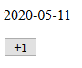
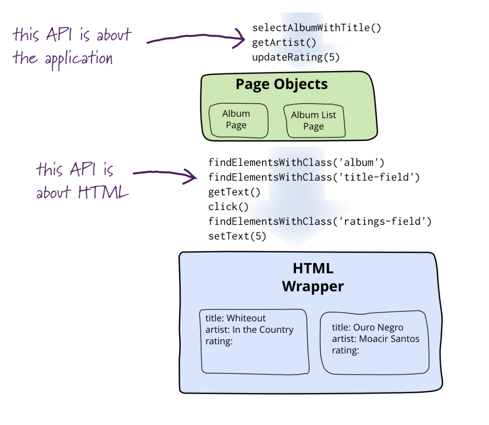

Web testing
Web applications are ubiquitous nowadays: whether you check your e-mail, file your tax return or play a simple online game, chances are high that you are using a web application. They are all client-server applications, where the server is located somewhere on the Internet, and the client runs in your web browser. Testing such web applications is called web testing.
A simplified architecture diagram of a web application may look as follows:
What makes web testing different from what we have seen so far? How can you apply the principles you have learned so far to testing web applications? In this chapter, we will answer these questions using concrete examples.
Characteristics of web applications
We will now take a look at some characteristics of web applications and how they influence our testing process. These consequences for testing are then discussed in more detail after this section.
The front end is usually written in JavaScript
JavaScript is still the de facto programming language for applications that run in a browser. (This may change in the future now that WebAssembly is supported by all major browsers, but WebAssembly has not gained much traction yet.) This means that you either need to write the front end in JavaScript, or use a different language like TypeScript and "transpile" it into JavaScript before having your code executed by a browser. (In fact, even JavaScript code is often transpiled from a newer language version to an older one, so that you can use JavaScript features that are not yet supported in all browsers.) Even though you will be able to apply many of the testing principles you have probably applied in a Java context, you will now also have to get acquainted with JavaScript unit testing frameworks.
The programming paradigms may be different, so principles like "inversion of control" may be implemented differently in a JavaScript context.
Also, you will have to pay special attention to the structure of your code. It is very easy to mix JavaScript with HTML in such a way that you end up with something that is difficult to test. Make sure you design for testability and apply some kind of modular design, creating small, independent components that are easily tested. When starting a new project from scratch, is helpful to use a JavaScript library or framework (like Vue.js, React or Angular) in order to achieve such a structure. If you are dealing with existing code for which there are no unit tests, you will probably have to do a significant amount of refactoring to make the code testable.
The application follows the client-server model
Having to separate your application into a client side (front end) and a server side (back end) which communicate with each other over HTTP may be beneficial, because it forces you to think of some kind of interface and can help to reduce coupling. Also, the fact that the server side can be written in any programming language you like, means that you can stick to your familiar testing ecosystem there. At the same time, it poses challenges, like possibly having different programming languages and corresponding ecosystems on the client and server side. (Of course, you could write the server side in Node.js if you wanted to use JavaScript on both sides.) You also have to realise that just testing the front and back end separately will probably not cut it. You will want to reflect how a user uses the application by performing end-to-end tests, which in turn means that you have to have a web server running while executing such a test. That server needs to be in the right state (especially if it uses a database), and the versions of front and back end need to be compatible.
Everyone can access your application
Web applications are usually available to everyone who is connected to the Internet. First of all, this means that your audience will probably be very diverse: the users will have very different backgrounds. This makes usability testing and accessibility testing testing a priority. Secondly, the number of users of your application may become very high at any given point in time, so load testing is a wise thing to do. Finally, some of those users may have malicious intent. Therefore security testing is of utmost importance (and is discussed in the separate Security Testing chapter).
The front end runs in a browser
Different users use different versions of different browsers. Cross-browser testing helps to ensure that your application will work in the browsers you support.
In addition, browsers show web pages differently based on the window size. Web designers use something called responsive web design to make sure the application will look good in browsers with different sizes, running on different devices. This is of course also something you should test.
Another factor to consider is the fact that HTML is used as the markup language for web pages. Even your HTML should be designed for testability, so that you can select elements, and so that you can test different parts of the user interface (UI) independently. Speaking of user interfaces: UI component testing can be considered a special case of unit testing: here your "unit" is one part of the Document Object Model (DOM), which you feed with certain inputs, possibly triggering some events (like "click"), after which you check whether the new DOM state is equal to what you expected. Even more specifically, snapshot testing can help you to make sure your UI does not change unexpectedly.
Finally, when you want to perform end-to-end tests automatically, you will have to somehow control the browser and make it simulate user interaction. Two well-known tools for this are Selenium WebDriver and Cypress.
Many web applications are asynchronous
Especially in a single-page application (SPA), most of the requests to the server are done in an asynchronous manner: while the browser is waiting for results from the server, the user can continue to use the application (i.e., they do not have to wait for the results). When writing unit tests, you have to account for this by "awaiting" the results from the (mocked) server call before you can check whether the output of your unit matches what you expected. When performing end-to-end tests, you may have to wait for a certain element to appear on the screen, or even to wait for a certain amount of time (like 1 second) before checking the output. This can easily lead to flaky tests (as discussed in the chapter on Test Code Quality). You either have to write custom code to make your tests more robust, or use a tool like Cypress, which has retry-and-timeout logic built-in.
JavaScript unit testing (without a framework)
We will now tackle several of the aforementioned challenges that relate to the front end of a web application by showing you how to design your JavaScript and HTML for testability, how to write unit tests for JavaScript functions, and how to unit test UI components. We will demonstrate this using both plain JavaScript and a more modern example that uses a JavaScript framework.
Design for testability
Let us look at an example of a very simple web application (without a back end) that looks like this:

The application does the following:
- When the page is loaded, the current date is shown.
- Every time you click the button, the date is incremented.
We start with the following (low-quality) implementation (dateIncrementer1.html):
<!DOCTYPE html>
<html lang="en">
<head>
<meta charset="utf-8" />
<title>Date incrementer - version 1</title>
</head>
<body>
<p>Date will appear here.</p>
<button onclick="incrementDate(this)">+1</button>
<script>
function incrementDate(sender) {
var p = sender.parentNode.children[0];
var date = new Date(p.innerText);
date.setDate(date.getDate() + 1);
p.innerText = date.toISOString().slice(0, 10);
}
window.onload = function () {
var p = document.getElementsByTagName("p")[0];
p.innerText = new Date().toISOString().slice(0, 10);
}
</script>
</body>
</html>
Take a minute to think of reasons why it is difficult or impossible to write unit tests for this piece of code.
First of all, the fact that the JavaScript code is inline with the rest of the page means that it is virtually impossible to write unit tests for it. You cannot run the code without also running the rest of the page, so you cannot test the functions separately, as a unit. This is a major issue and should be solved by moving the JavaScript code to one or more separate files.
The incrementDate() function is a mix of date logic and user interface (UI) code.
These parts cannot be tested separately.
This is exacerbated by the fact that keeping track of the currently shown date is done by updating and reading from the DOM.
We have even become dependent on the implementation of the date conversion functions (which leads to problems if we decide to use a different date format, for instance).
The conversion from string that is done should not even be necessary.
We should solve these problems by splitting up the incrementDate() function into different functions and storing the currently shown date in a variable.
Another problem is that the initial date value is hard-coded: the code always uses the current date (by calling new Date()), so you cannot test what happens with cases like "February 29th, 2020".
The <p> element was difficult to locate using the standard JavaScript query selectors, and we resorted to abusing the DOM structure to find it.
We thereby unnecessarily imposed restrictions on the DOM structure (the <p> element must now be on the same level as the button, and it must be the first element).
For your UI tests, you should make sure that you can reliably select the elements you use.
In our simple JavaScript example, we can achieve this by adding an id to the element and then selecting it by using getElementById().
In general, it is better to find elements in the same way that users find them (for example, by using labels in a form).
The aforementioned issues are solved by refactoring the code and splitting it up into three files.
The first one (dateUtils.js) contains the utility functions for working with dates, which can now nicely be tested as separate units:
// Advances the given date by one day.
function incrementDate(date) {
date.setDate(date.getDate() + 1);
}
// Returns a string representation of the given date
// in the format yyyy-MM-dd.
function dateToString(date) {
return date.toISOString().slice(0, 10);
}
The second one (dateIncrementer.js) contains the code for keeping track of the currently shown date and the UI interaction:
function DateIncrementer(initialDate, dateElement) {
this.date = new Date(initialDate.getTime());
this.dateElement = dateElement;
}
DateIncrementer.prototype.increment = function () {
incrementDate(this.date);
this.updateView();
};
DateIncrementer.prototype.updateView = function () {
this.dateElement.innerText = dateToString(this.date);
};
The third one is the refactored HTML file (dateIncrementer2.html) that uses our newly created JavaScript files:
<!DOCTYPE html>
<html lang="en">
<head>
<meta charset="utf-8" />
<title>Date incrementer - version 2</title>
</head>
<body>
<p id="pDate">Date will appear here.</p>
<button id="btnIncrement">+1</button>
<script src="dateUtils.js"></script>
<script src="dateIncrementer.js"></script>
<script>
window.onload = function () {
var incrementer = new DateIncrementer(
new Date(), document.getElementById("pDate"));
var btn = document.getElementById("btnIncrement");
btn.onclick = function () { incrementer.increment(); };
incrementer.updateView();
}
</script>
</body>
</html>
The date handling logic can now be tested separately, as well as the UI code. The initial date can now be supplied as an argument.
The <p> element can now be found by its ID.
We should now be ready to write some tests!
Some side notes about the code:
- Even though the code has improved, part of it is still not unit-testable (namely the
onloadhandler). This can be solved by factoring out that part to a separate file as well. - You may want to structure the code even better, for instance by writing a proper MVC (Model-View-Controller) implementation. Especially for larger-scale projects with lots of JavaScript, it makes sense to use a library or framework that provides such a structure for you.
- We have not used any modern JavaScript features (like the
classsyntax) in order to maintain compatibility with older browsers. We will show an example that uses newer JavaScript features later in the chapter. - As with the other examples in the book, the code can be found in the code examples repository.
Writing the tests
At this point, you should apply the testing principles you have learned so far in this book to come up with a good set of tests for the implementation above. In this section, we will just show a small number of tests to get you started.
Before we discuss JavaScript unit testing frameworks, let us see how far we can get with a manual implementation. This should give us some insight into how those frameworks work and allow us to think about JavaScript testing without being biased by a particular framework.
We first write some tests for the functions in dateUtils.js by creating an HTML file, calling the functions and doing some light-weight assertions:
<!DOCTYPE html>
<html lang="en">
<head>
<meta charset="utf-8" />
<title>Date utils - Test</title>
</head>
<body>
<p>View the console output for test results.</p>
<script src="dateUtils.js"></script>
<script>
function assertEqual(expected, actual) {
if (expected != actual) {
console.log("Expected " + expected + " but was " + actual);
}
}
/*
Be aware that in JavaScript Date objects, months are zero-based,
meaning that month 0 is January, month 1 is February, etc.
So "new Date(2020, 1, 29)" represents February 29th, 2020.
*/
// Test 1: incrementDate should add 1 day a given date object
var date1 = new Date(2020, 1, 29); // February 29th, 2020
incrementDate(date1);
// This succeeds:
assertEqual(new Date(2020, 2, 1).getTime(), date1.getTime());
// Test 2: dateToString should return the date in the form "yyyy-MM-dd"
var date2 = new Date(2020, 4, 1); // May 1st, 2020
// This fails because of time zone issues
// (the actual value is "2020-04-30"):
assertEqual("2020-05-01", dateToString(date2));
</script>
</body>
</html>
Even without using any frameworks, we could write some tests and actually found a bug in the code.
On the console, the following message is logged: "Expected 2020-05-01 but was 2020-04-30".
This is because the implementation of dateToString returns the date in UTC, whereas the date was created in the local time zone of the user with time 0:00:00.
So a user who is in time zone UTC+2 and opens the application just after midnight on May 1st, will see April 30th instead.
Now the requirements were not explicit on what was meant by the "current date", but this is probably not what was intended so it can be considered a bug.
For reference, here is an alternative implementation that does not have the time zone issues (as long as the given date has been created in the local time zone of the user); you should of course write tests to verify this:
function dateToString(date) {
year = date.getFullYear();
month = ('0' + (date.getMonth() + 1)).slice(-2);
day = ('0' + date.getDate()).slice(-2);
return year + "-" + month + "-" + day;
}
Next, we take a look at writing UI tests for the DateIncrementer class in dateIncrementer.js. We create another HTML file (dateIncrementerTest.html), manually mock the external functions and check whether increment() works as expected:
<!DOCTYPE html>
<html lang="en">
<head>
<meta charset="utf-8" />
<title>Date incrementer - Test</title>
</head>
<body>
<p>View the console output for test results.</p>
<p id="pDate" style="display: none">Dummy element for UI test.</p>
<script src="dateIncrementer.js"></script>
<script>
function assertEqual(expected, actual) {
if (expected != actual) {
console.log("Expected " + expected + " but was " + actual);
}
}
// Mocks
var incrementDateCalls = 0;
var dateToStringCalls = 0;
function incrementDate(date) {
incrementDateCalls++;
date.setDate(1);
}
function dateToString(date) {
dateToStringCalls++;
return "mock";
}
// Test 3: DateIncrementer
var date3 = new Date(2020, 2, 14); // March 14th, 2020
var p = document.getElementById("pDate");
var dateIncrementer = new DateIncrementer(date3, p);
dateIncrementer.increment();
// 3.1: increment() should call incrementDate()
assertEqual(1, incrementDateCalls);
// 3.2: increment() should not mutate the original date
assertEqual(14, date3.getDate());
assertEqual(2, date3.getMonth());
assertEqual(2020, date3.getFullYear());
// 3.3: increment() should use dateToString and update the view
assertEqual(1, dateToStringCalls);
assertEqual("mock", p.innerText);
</script>
</body>
</html>
We successfully mocked the external dependencies and were able to check whether the UI was updated properly. This time, nothing is logged to the console because all tests succeed.
Even though we showed that it is possible to mock the date utility functions, you can also decide to use their actual implementations.
(This trade-off was explained in the Test doubles chapter.)
In the example above, you would have to add the line <script src="dateUtils.js"></script> (and remove the mock implementations) in order to use the actual implementations.
Of course, the manual approach we followed here has obvious limitations. We had to write the assertEqual function ourselves, and we would need to write similar methods for other kinds of assertions.
Our assertEqual implementation only logs to the console and does not provide any context when an assertion has failed (like the line number of the call to assertEqual).
The state of the UI is not reset after the UI tests; this becomes a problem when we create more tests than the single one we created.
You could solve all these issues by hand, but to avoid reinventing the wheel, it is wise to use an existing unit testing framework.
Choosing a unit testing framework
In the JavaScript world, there is an abundance of tools and frameworks to choose from. The same holds for unit testing frameworks: there are many options, and contrary to Java there is certainly no de facto standard framework. Moreover, new frameworks are developed and adopted every year.
When working on an existing application that already has a testing framework in place, it probably makes sense to stick to that. For new projects, it is useful to get yourself up-to-date with the currently popular JavaScript testing frameworks. Articles like An Overview of JavaScript Testing in 2020 give you a nice summary of the current state of affairs.
Choosing a framework that is used by many people means that you are more likely to get support in their online community. You should also consider using the testing framework that is recommended by the JavaScript library/framework you use. For instance, for React applications the recommended testing framework is Jest. Another factor to consider is continuity. Is it just a one man project, or is it maintained by a large organisation? When was the latest version published?
There is no single right answer, and we are not trying to give you one here. Choose a framework that seems most suited to your project, with the above considerations in mind.
Just to give you an example of what the tests may look like when using such a framework, the next section demonstrates an example implementation in React with tests in Jest.
JavaScript unit testing (with React and Jest)
In this example, we will rebuild the "date incrementer" application from the previous section in React. We create a new React application using the Create React App tool. This creates a project structure with the necessary dependencies and includes the unit testing framework Jest.
Implementation
We can mostly reuse the utility functions that we built earlier (dateUtils.js):
// Advances the given date by one day.
function incrementDate(date) {
date.setDate(date.getDate() + 1);
}
// Returns a new date that is one day later than the given date.
export function addOneDay(date) {
const copy = new Date(date.getTime());
incrementDate(copy);
return copy;
}
// Returns a string representation of the given date
// in the format yyyy-MM-dd.
export function dateToString(date) {
const year = date.getFullYear();
const month = ('0' + (date.getMonth() + 1)).slice(-2);
const day = ('0' + date.getDate()).slice(-2);
return year + "-" + month + "-" + day;
}
Compared to what you saw before, we have made the following changes:
- We now have the JavaScript module feature at our disposal, so we wrote a
dateUtilsmodule and exported the functions we use elsewhere. - We can now use modern JavaScript features like the
constkeyword (which creates a variable that cannot be changed through reassignment). The code gets transpiled to an older version of JavaScript (usingvarinstead ofconst) which is understood by most browsers. (In our plain JavaScript example, we had to stay away from modern features in order to maintain browser compatibility.) - As we will see later on in the example, React expects us to treat state as immutable. Therefore, we should not directly change the
datewith theincrementDate()function. We created a new function,addOneDay(), which circumvents the issue by creating a newDateinstance and updating that one.
We use those utility functions in the UI component, DateIncrementer.js:
import React, { useState } from 'react';
import { addOneDay, dateToString } from './dateUtils.js';
function DateIncrementer({ initialDate }) {
const [date, setDate] = useState(initialDate);
return (
<div>
<p>{dateToString(date)}</p>
<button onClick={() => setDate(addOneDay)}>
+1
</button>
</div>
);
}
export default DateIncrementer;
The component is implemented as a function, with "props" (properties) as input, and a DOM representation as output.
Our component has one input, initialDate, which is used to set the date that is shown when the component is first loaded.
The component keeps one state variable, date, which stores the date as it is updated by the user using the button.
The XML-like syntax you see there is not HTML, but rather a JavaScript extension called JSX. This syntax gets converted to React.createElement() calls, of which the result will eventually get rendered to the DOM.
We defined the <p> and <button> elements like before, but can now include JavaScript within curly braces to provide the expressions for the date string and the onClick handler.
Finally, we alter the file App.js that was generated by create-react-app to use our DateIncrementer component:
import React, { useState } from 'react';
import DateIncrementer from './DateIncrementer.js';
function App() {
const [today] = useState(new Date());
return (
<main>
<DateIncrementer initialDate={today} />
</main>
);
}
export default App;
We now have an application that behaves the same as the one we built in the plain JavaScript example. We will now turn our attention to writing tests for this.
Tests for the utility functions
For the utility functions, we can again write similar code to what we did with our ad-hoc unit tests:
import { addOneDay, dateToString } from './dateUtils';
describe('addOneDay', () => {
test('handles February 29th', () => {
const oldDate = new Date(2020, 1, 29); // February 29th, 2020
const newDate = addOneDay(oldDate);
expect(newDate).toEqual(new Date(2020, 2, 1));
});
});
describe('dateToString', () => {
test('returns the date in the form "yyyy-MM-dd"', () => {
var date = new Date(2020, 4, 1); // May 1st, 2020
expect(dateToString(date)).toEqual("2020-05-01");
});
});
The differences are:
- We can now take advantage of the module system. We do not have to load the functions into global scope any more, but just import the functions we need.
- We use the Jest syntax, where
describeis optionally used to group several tests together, andtestis used to write a test case, with a string describing the expected behaviour and a function executing the actual test. The body of the test function uses the "fluent" syntaxexpect(...).toEqual(...).
Tests for the user interface
For the DateIncrementer component, we could write tests like this:
import React from 'react';
import { render, fireEvent } from '@testing-library/react';
import DateIncrementer from './DateIncrementer';
test('renders initial date', () => {
const { getByText } = render(<DateIncrementer initialDate={new Date(2020, 0, 1)} />);
const dateElement = getByText("2020-01-01");
expect(dateElement).toBeInTheDocument();
});
test('updates correctly when clicking the "+1" button', () => {
const date = new Date(2020, 0, 1);
const { getByText } = render(<DateIncrementer initialDate={date} />);
const button = getByText("+1");
fireEvent.click(button);
const dateElement = getByText("2020-01-02");
expect(dateElement).toBeInTheDocument();
});
Here you see a similar Jest unit test structure, but we also use react-testing-library to render the UI component to a virtual DOM.
In react-testing-library, you are encouraged to test components like a user would test them.
This is why we use functions like getByText to look up elements.
This also means that we did not have to include any ids or other ways of identifying the <p> and the <button> in the component.
You could also decide to mock the utility functions, like we did in the plain JavaScript example. In that case, the test would look like this:
jest.mock('./dateUtils');
import React from 'react';
import { render, fireEvent } from '@testing-library/react';
import { dateToString, addOneDay } from './dateUtils';
import DateIncrementer from './DateIncrementer';
test('renders initial date', () => {
dateToString.mockReturnValue("mockDateString");
const date = new Date(2020, 0, 1);
const { getByText } = render(<DateIncrementer initialDate={date} />);
const dateElement = getByText("mockDateString");
expect(dateToString).toHaveBeenCalledWith(date);
expect(dateElement).toBeInTheDocument();
});
test('updates correctly when clicking the "+1" button', () => {
const mockDate = new Date(2021, 6, 7);
addOneDay.mockReturnValueOnce(mockDate);
const date = new Date(2020, 0, 1);
const { getByText } = render(<DateIncrementer initialDate={date} />);
const button = getByText("+1");
fireEvent.click(button);
expect(addOneDay).toHaveBeenCalledWith(date);
expect(dateToString).toHaveBeenCalledWith(mockDate);
});
Here, jest.mock('./dateUtils') replaces every function that is exported from the dateUtils module by a mocked version.
You can then provide alternative implementations with functions like mockReturnValue, and check whether the functions have been called with functions like expect(...).toHaveBeenCalledWith(...).
The version with mocks is less 'real' than the one without. The one without mocks is arguably preferable. However, you could use the same mechanism for things like HTTP requests to a back end, and in that case mocking would certainly be helpful.
Snapshot testing
To understand snapshot testing, let us first return to one of the UI tests we wrote above:
test('renders initial date', () => {
const { getByText } = render(<DateIncrementer initialDate={new Date(2020, 0, 1)} />);
const dateElement = getByText("2020-01-01");
expect(dateElement).toBeInTheDocument();
});
We gave our component some input and checked whether the rendered component contained what we expected. What if the rendered output contained more elements? Would you just look up all the elements and assert things about them? This can get quite tedious and time-consuming after a while.
If all you want to do is make sure that your UI does not change unexpectedly, snapshot tests are a good fit. The first time you run a snapshot test, it takes a snapshot of the component as it is rendered in that initial run. That first time, the test will always pass. Then in all subsequent runs, the rendered output is compared to the snapshot. If the output is different, the test fails, and you are presented with the differences between the two versions. The test runner allows you to inspect the differences and decide whether the changes are what you intended. You can then either change the component so that its output corresponds to the snapshot, or you press a button to update the snapshot and mark the newly rendered output as the correct one.
In Jest, such a test can look like this:
test('renders correctly via snapshot', () => {
const { container } = render(<DateIncrementer initialDate={new Date(2020, 0, 1)} />);
expect(container).toMatchSnapshot();
});
On the first run, this creates a file called DateIncrementer.test.js.snap with the following contents:
// Jest Snapshot v1, https://goo.gl/fbAQLP
exports[`renders correctly via snapshot 1`] = `
<div>
<div>
<p>
2020-01-01
</p>
<button>
+1
</button>
</div>
</div>
`;
On subsequent runs, the output of the test is compared to the corresponding snapshot.
The created snapshot file should be committed to your version control system (like Git), so that your tests can also run on your Continuous Integration (CI) system.
End-to-end testing
The goal of end-to-end testing is to test the flow through the application as a user might follow it, while integrating the various components of the web application (such as the front end, back end and database). For instance, when testing an e-commerce application, you could test the flow of a user searching for a product, adding the product to their cart, going to checkout, logging in, paying for their products and receiving a confirmation. You should make this as realistic as possible, so you use an actual browser and perform the tests on a production-like version of the application components; although of course you will want to simulate the payments to prevent you from having to pay for your own products every time you run the test... Similarly, you should be careful with sending out actual e-mails and can decide to send the e-mails to a drop folder instead of to an actual recipient.
While performing these tests manually is possible and sometimes necessary, this can be automated too. A well-known tool for this is Selenium WebDriver. It basically acts as a "remote control" for your browser, so you can instruct it to "open this page, click this button, wait for that element to appear", etc. You write these tests in one of the supported languages (such as Java) with your favourite unit testing framework. You can then also run these same tests on different browsers and in this way perform cross-browser tests.
The WebDriver API is now a W3C standard, and several implementations of it (other than Selenium) exist, such as WebDriverIO.
Another, more recent tool, which does not use WebDriver, is Cypress. It integrates more closely with the browser and eliminates some issues that you encounter when you use WebDriver. For instance, when you perform an asynchronous action (like fetching all matching products from a web service, after clicking a Search button) you have to wait for the results to appear. It is sometimes difficult to program this reliably and testers often resort to insert statements like "wait one second" hoping that that is enough for the web service to respond. Cypress solves this by automatically retrying to find an element until it appears, so you do not have to write that code. It also has many more features which go beyond the scope of this book.
As discussed in the chapter on model-based testing, it is common to create an abstraction layer on top of the web application. In the context of web applications, the abstractions are called Page Objects.
Page Objects
An example of a page object is shown in the diagram, made by Martin Fowler, below:

At the bottom, you can see a certain web page that we want to test. The tool for communicating through the browser (such as WebDriver), gives an API to access the HTML elements. Additionally, the tool supports clicking on elements, for example on a certain button.
If we use this API directly in the tests, the tests become unreadable very quickly. So, we create a page object with just the methods that we need in the tests. These methods correspond to the application, rather than the HTML elements. The page objects implement these methods by using the API provided by the tool.
Then, the tests use these methods instead of the ones about the HTML elements. Because we are using methods that correspond to the application itself, they will be more readable than tests without the page objects.
State Objects
Page objects give us an abstraction for single pages or even fragments of pages. This is already better than using the API for the HTML elements in the test, but we can take it a bit further. We can make the page objects correspond to the states in the navigational state machine. A navigational state machine is a state machine that describes the flow through a web application. Each page will be represented as a state. The events of the transitions between these states show how the user can go from one to another page.
With this approach, the page objects each correspond to one of the states of the state machine. Now we do not call them page objects anymore, but state objects. In these state objects we have the inspection and trigger methods. Additionally, we have methods that can help with state self-checking. These methods verify whether the state itself is working correctly, for example by checking if certain buttons can be clicked on the web page. Now the tests can be expressed in the application's context, using these three types of methods.
Behaviour-Driven Design
The state objects are mostly used for end-to-end testing in web development. Another technique useful in end-to-end testing is behaviour-driven design.
In behaviour-driven design the system is designed with scenarios in mind. These scenarios are written in natural language and describe the system's behaviour in a certain situation.
For these scenarios to be used by tools, an example of a tool for scenarios is cucumber, we need to follow a certain format. This is a standard format for scenarios, as it provides a very clear structure. A scenario consists of the following:
- Title of the scenario
- Given ...: Certain conditions that need to hold at the start of the scenario.
- When ...: The action taken.
- Then ...: The result at the end of the scenario.
Let's look at a scenario for an ATM. If we have a balance of $100, a valid card and enough money in the machine, we can give a certain amount of money requested by the user. Together with the money, the card should be given back, and the balance of the account should be decreased. This can be turned into scenario 1 below:
Story: Account Holder withdraws cash
As an Account Holder
I want to withdraw cash from an ATM
So that I can get money when the bank is closed
Scenario 1: Account has sufficient funds
Given the account balance is $100
And the card is valid
And the machine contains enough money
When the Account Holder requests $20
Then the ATM should dispense $20
And the account balance should be $80
And the card should be returned
The small introduction above the scenario itself is part of the user story. A user story usually consists of multiple scenarios with respect to the user introduced. This user is the account holder in this example.
With the general Given, When, Then structure we can describe a state transition as a scenario.
In general the scenario for a state transition looks like this:
Given I have arrived in some state
When I trigger a particular event
Then the application conducts an action
And the application moves to some other state.
Each scenario will be able to cover only one transition. To get an overview of the system as a whole we will still have to draw the entire state machine.
Other types of tests
Although we have covered lots of topics related to web testing in this chapter, we mentioned even more things to consider in our discussion of the characteristics of web applications.
Many of them deserve their own chapter, but for now we will just give a quick summary.
Usability and accessibility testing
Usability and accessibility testing are very closely related. Traditionally, usability focuses more on "user-friendliness"; making the application pleasant and easy to use. According to the W3C, accessibility is about "making content accessible to a wider range of people with disabilities, including blindness and low vision, deafness and hearing loss, learning disabilities, cognitive limitations, limited movement, speech disabilities, photosensitivity and combinations of these."
To know what to test for, it is useful to consult resources like the Web Content Accessibility Guidelines (WCAG).
You can use tools like "axe" to test your web pages for accessibility problems. However, at this stage, such tests often still need to be done manually. Install assistive technologies like a screen reader that reads aloud the pages you load in your browser, and see whether you can still use the application without using your eyes. Or better yet, ask a user with a disability to use your application and help you with identifying issues in it.
Load and performance testing
On the web, performance is very important. If users have to wait too long for your application to load, they may lose interest and turn to somewhere else. Also, you should make sure that your application still functions properly when used by lots of people.
Various tools exist to put a lot of load on your system and help you find the parts with performance issues.
References
- QUnit's Introduction to Unit Testing. https://qunitjs.com/intro/
- Vitali Zaidman. An Overview of JavaScript Testing in 2020. https://medium.com/welldone-software/an-overview-of-javascript-testing-7ce7298b9870
- React.Component. https://reactjs.org/docs/react-component.html
- React Testing Overview. https://reactjs.org/docs/testing.html#tools
- Jest Documentation. https://jestjs.io/docs/en/getting-started
- Kent C. Dodds. Making your UI tests resilient to change. https://kentcdodds.com/blog/making-your-ui-tests-resilient-to-change
- Kent C. Dodds. The Merits of Mocking. https://kentcdodds.com/blog/the-merits-of-mocking
- Martin Fowler. Page Object. https://martinfowler.com/bliki/PageObject.html
- van Deursen, A. (2015). Beyond Page Objects: Testing Web Applications with State Objects. ACM Queue, 13(6), 20.
- WebDriver (W3C Recommendation). https://www.w3.org/TR/webdriver1/
- Introduction to Cypress. https://docs.cypress.io/guides/core-concepts/introduction-to-cypress.html
- Web Content Accessibility Guidelines (WCAG) 2.1 (W3C Recommendation). https://www.w3.org/TR/WCAG21/